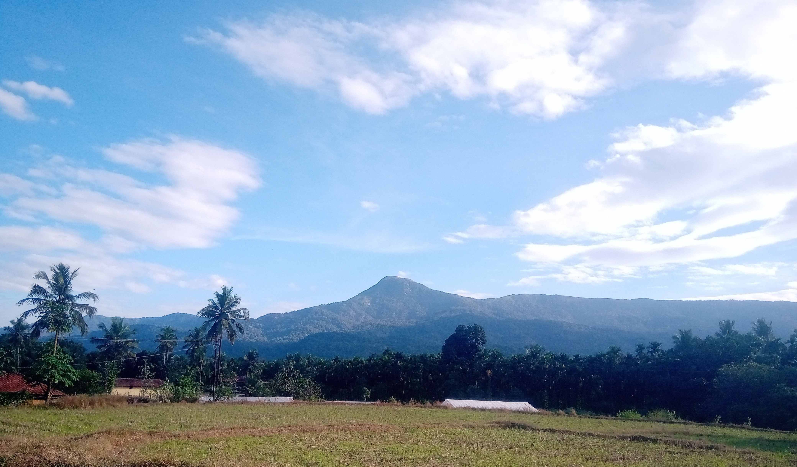

this is a paragraph
click here 9901856364 mail  google chapeter 3 chapeter 19this is nikitha
The ocean contains 90% of the carbon in the global carbon cycle. It's super power is to sequester more CO2 than any other ecosystem on Earth. But it needs our help to be more heroic and effective. We need more people to protect and restore ocean health. Threats like climate change and ocean acidification are accelerating faster than ever before in geologic history. Humanity must rise to meet that threat. SeaTrees creates connections between people and brands that are ready to meet this challenge, and the social entrepreneurs and scientists who know how to regenerate ecosystems but struggle for funding and recognition. Through a combination of indigenous wisdom, modern science and inspired business, we can speed up the Earth's natural healing mechanisms to repair our planet in real-time. We will also create jobs and livelihoods that maintain healthy ecosystems for the future.
The ocean contains 90% of the carbon in the global carbon cycle. It's super power is to sequester more CO2 than any other ecosystem on Earth. But it needs our help to be more heroic and effective. We need more people to protect and restore ocean health. Threats like climate change and ocean acidification are accelerating faster than ever before in geologic history. Humanity must rise to meet that threat. SeaTrees creates connections between people and brands that are ready to meet this challenge, and the social entrepreneurs and scientists who know how to regenerate ecosystems but struggle for funding and recognition. Through a combination of indigenous wisdom, modern science and inspired business, we can speed up the Earth's natural healing mechanisms to repair our planet in real-time. We will also create jobs and livelihoods that maintain healthy ecosystems for the future.
fdftgegdsxfb rf vcrfdcvrf dv regfvrg vrtgretf4ewsd rgvfcgvrdsgtedfsfvrtg
We use cookies to make sure you can have the best experience on our site. If you continue to use this site we will assume that you are happy with it.Ok
grefdcdufhvjr v grtgrrewfrdfgrgfrwf f f f f ffffrfer dcredsrgwgf rtfrwe wrfrgfre
fvfvf